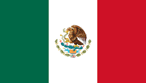

México

Ciudad de México (coloquialmente, la Ciudad de México), anteriormente denominada Distrito Federal, es una de las 32 entidades federativas de México, así como la capital de los Estados Unidos Mexicanos. Se localiza en el Valle de México, a una altitud media de 2240 m s. n. m. Tiene una superficie de 1495 km², y se divide administrativamente en 16 demarcaciones. Su población es de 8,9 millones de habitantes, aproximadamente. Sin embargo, cuando se considera también la Zona Metropolitana del Valle de México, suma entonces una población total de más de 22 millones de habitantes, lo que la coloca en el noveno puesto de las aglomeraciones urbanas más grandes y más pobladas del mundo, y con ello la más grande del continente americano y del mundo hispanohablante.
Es el núcleo urbano más grande de la República mexicana y también su principal centro político, económico, social, académico, financiero, empresarial, turístico, cultural, de comunicaciones, de entretenimiento y de moda. Ha sido el escenario de varios de los acontecimientos históricos y mediáticos más importantes de dicha nación. Ciudad de México tuvo un PIB, en 2017, de 568 445 millones de dólares, con un crecimiento medio en ese año de 3.2 % (por encima de la media nacional); dichas cifras representaron el 17 % del total del PIB nacional, siendo la principal economía de México, además de significar una aportación del 25 % al crecimiento económico del país ese año. Catalogada como ciudad global, es uno de los centros financieros y culturales más importantes del mundo, con una de las economías más dinámicas a nivel internacional, y es la número quince a nivel mundial, por el tamaño de su PIB.
HIMNO NACIONAL